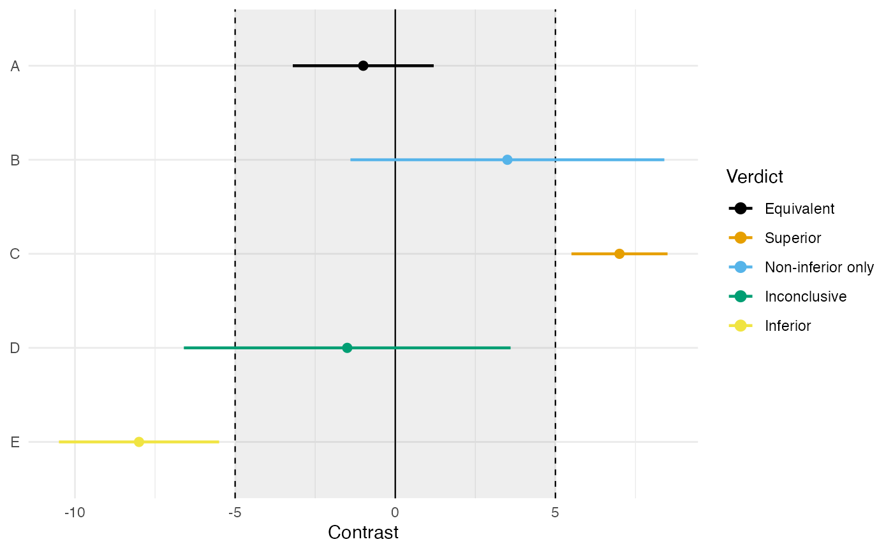
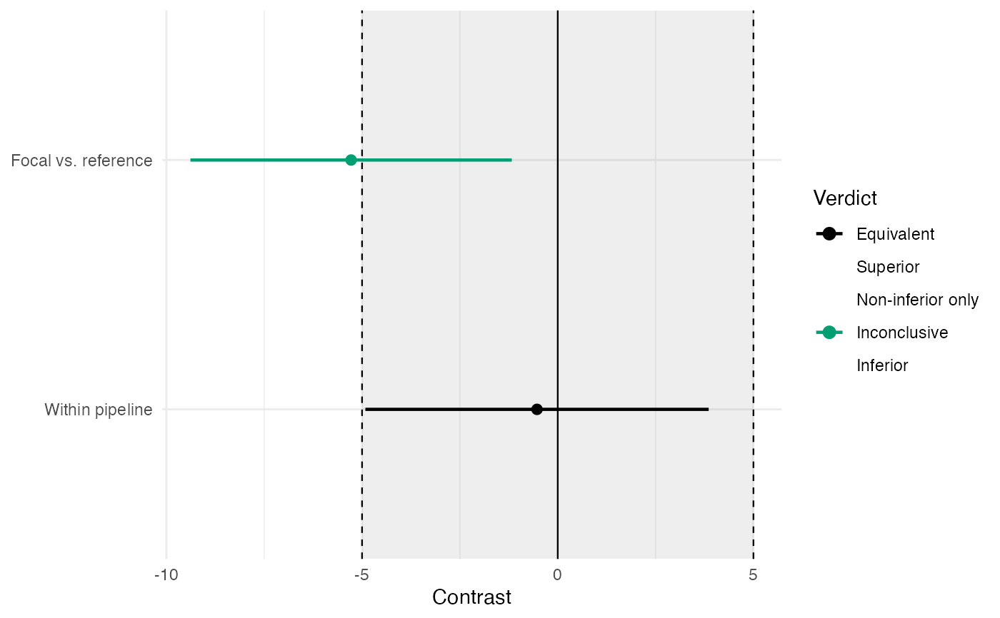

Draws a forest-style plot of one or more contrast estimates with
their 100(1 - 2\(\alpha\))% confidence intervals against the
equivalence region \((-\delta_L, \delta_U)\) and the
noninferiority bound \(-\delta_L\), colored by the five-way
verdict of tost_c: an interval entirely inside the
region is equivalent; entirely above \(\delta_U\), superior;
entirely below \(-\delta_L\), inferior; a lower limit above
\(-\delta_L\) with an upper limit past \(\delta_U\),
noninferior only; and an interval straddling a bound,
inconclusive. The geometry is the decision rule, which is
what makes the plot the natural report of an equivalence analysis.
Usage
plot_equivalence(
x = NULL,
estimate = NULL,
lower = NULL,
upper = NULL,
names = NULL,
delta_lower = NULL,
delta_upper = NULL,
xlab = "Contrast",
title = NULL,
palette = "okabe_ito"
)Arguments
- x
Either a single result from
tost_cor a list of them (a named list supplies the row labels). Alternatively, supplyestimate,lower, andupperdirectly.- estimate, lower, upper
Numeric vectors of contrast estimates and their confidence limits, used when
xis not supplied.- names
Optional character vector of row labels.
- delta_lower, delta_upper
Equivalence bounds, as positive magnitudes (the region drawn is \((-\delta_L, +\delta_U)\)). Taken from
xwhen it carriestost_cresults; required otherwise. If onlydelta_upperis supplied, the bounds are symmetric.- xlab
The horizontal axis label. Default
"Contrast".- title
Optional plot title.
- palette
Character string naming the color palette for the verdict colors. Defaults to
"okabe_ito", base R's colorblind-safe Okabe-Ito palette;"tableau"is also available.
Details
The shaded band is the equivalence region and the dashed vertical
lines are its bounds; the solid line at zero marks exact equality,
which is the null value of ordinary significance testing and is
deliberately not a decision boundary here. Verdicts are
recomputed from the supplied limits and bounds, so the plot cannot
disagree with tost_c.
References
Chattopadhyay, B., Bandyopadhyay, T., Kelley, K., & Padalunkal, P. J. (2025). A sequential approach for noninferiority or equivalence of a linear contrast under cost constraints. Psychological Methods, 30(2), 425–439. doi:10.1037/met0000570
Schuirmann, D. J. (1987). A comparison of the two one-sided tests procedure and the power approach for assessing the equivalence of average bioavailability. Journal of Pharmacokinetics and Biopharmaceutics, 15(6), 657–680.
See also
Other equivalence testing:
power_density_equivalence_md(),
power_equivalence_c(),
power_equivalence_md(),
power_equivalence_md_plot(),
ss_power_equivalence_c(),
tost_c(),
tost_r(),
tost_smd()
Other plotting:
plot_R2(),
plot_cfa_k(),
plot_ci(),
plot_irt_information(),
plot_mediation_mbco(),
plot_regions_of_significance(),
plot_smd(),
plot_trajectories(),
plot_trajectories_fitted(),
power_equivalence_md_plot()
Author
Ken Kelley kkelley@nd.edu
Examples
# Five constructed intervals, one per verdict, against bounds of 5
# (A equivalent, B noninferior only, C superior, D inconclusive,
# E inferior):
plot_equivalence(estimate = c(-1.0, 3.5, 7.0, -1.5, -8.0),
lower = c(-3.2, -1.4, 5.5, -6.6, -10.5),
upper = c( 1.2, 8.4, 8.5, 3.6, -5.5),
names = c("A", "B", "C", "D", "E"),
delta_upper = 5)

# From tost_c() results; a named list supplies the labels.
res <- list(
"Focal vs. reference" = tost_c(psi_hat = -5.28, se = 2.49,
df_error = 399, delta_upper = 5),
"Within pipeline" = tost_c(psi_hat = -0.53, se = 2.66,
df_error = 399, delta_upper = 5)
)
plot_equivalence(res)
